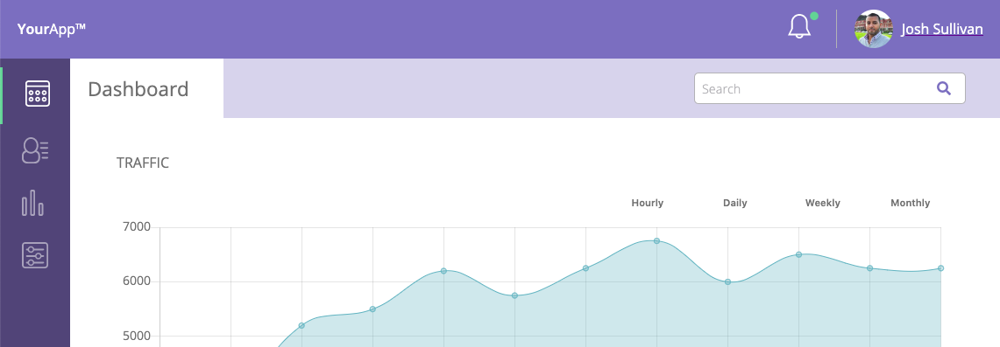
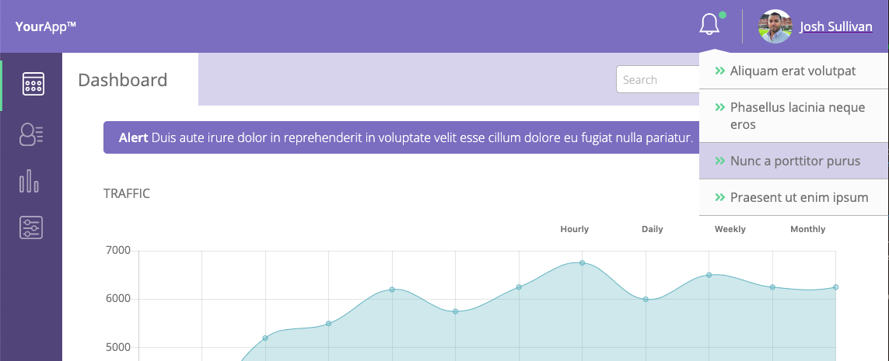
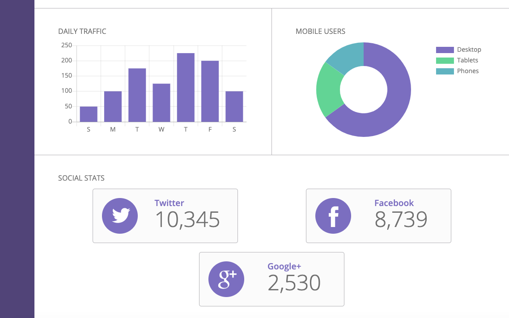
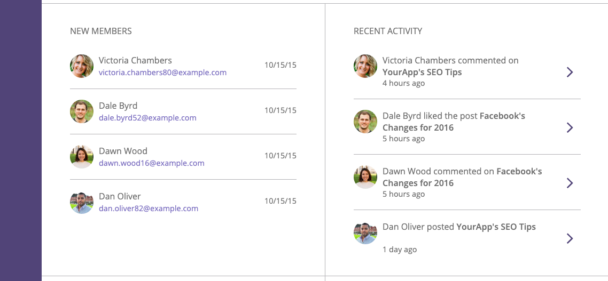
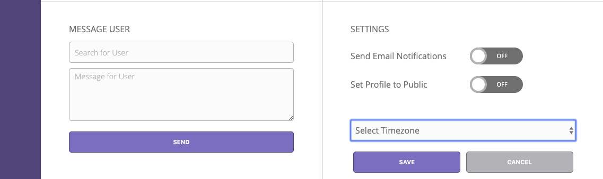
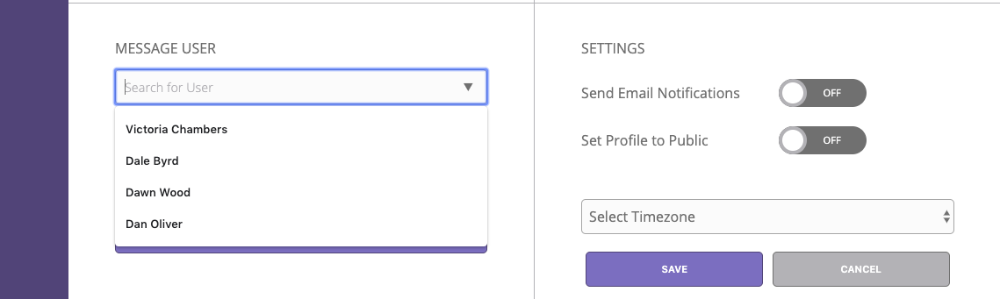
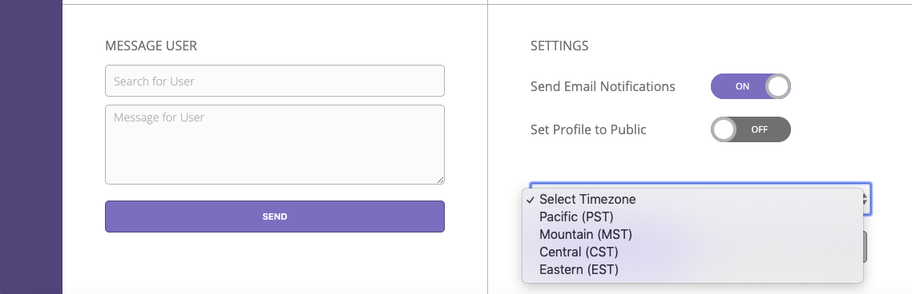

Dashboard Web App Example
A web dashboard, acting like a control panel for the web app, complete with JavaScript-driven charts and graphs.
When the dashboard first loads, an alert banner is present. The user has the option to keep it or close it.
When the alert banner is closed, it is removed from the screen and the elements from the page move up to fill in the gap.
There is a notification dropdown menu that highlights notifications when the user hovers or clicks on a specific notifictation.
Using chart.js and styled to match the design of the dashboard, multiple line graphs, a bar graph, and a donut graph were created. The traffic line graphs change depending on which filter button is clicked. For all graphs, hovering over each data point pops up the exact data number. All graphs are also responsive to changing screen widths.
SVG icons were used for not only the notification bell at the top, but also for each of the social media icons.
There is a New Memeber section and a section for recent activity. The new member section allows you to email a new member with a simple click. The recent activity section shows you recent posts or discussions by memebers. Clicking any activity would bring you to that post or discussion.
The final piece of the dashboard is a message user section and a settings section.
Searching for a user saves past searches allowing the user to choose from an autocompleted list of previously searched memebers. Clicking send simulates a "submit", and with the use of JavaScript, displays a "sent" confirmation or error message if a user is not selected or the message area is empty.
In the settings section, a user can switch email and profile settings to on and off. There is a time zone dropdown menu to choose a user's time zone, and save/cancel buttons for saving or canceling options. Local storage is used in the settings so when the page is refreshed, a user's prefered settings are saved.
The entire dashboard web app, and the sections within, are responsive to changing screen sizes.
What I Learned
There was so much to learn with this project. It was heavily reliant on graphs to diseminate information to the user along with interactivity. Using chart.js, I learned how to add data to charts and implement different graph style types into the HTML. This allowed the charts to be responsive and could be read by a screen reader. Where as if all the charts were images, all its data content would be inaccessible to anyone who relies on a screen reader for help.
In the main traffic graph area, I learned that I could swap the line graphs so they are visible one at a time by adding and removing classes to the filter traffic buttons.
Working with local storage, I learned how, with JavaScript, the user was able to save their email notification preferences, public profile preference, and time zone they live in to the Settings section.